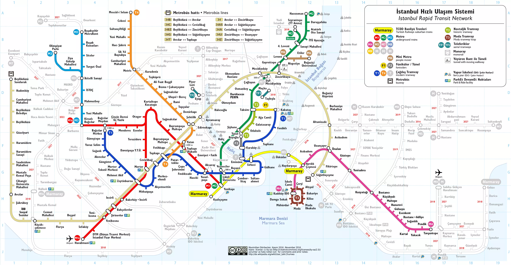

Detailed Map of Istanbul
Istanbul (Turkish: İstanbul) is Turkey's most popular city as well as its cultural and financial hub. Located on both sides of the Bosphorus, the narrow strait between the Black Sea and the Marmara Sea, Istanbul bridges Asia and Europe both physically and culturally. Istanbul's population is estimated to be between 12 and 19 million people, making it also one of the largest cities in Europe and the world.
Here you can see the map we prepared about top places in Istanbul. All places here are must see but if you don't have much time to visit all of these places, we recommend you to pass blue ones.
Main Istanbul Metro, Tram and Funicular Lines for Tourists
This Istanbul transportation map is geared toward tourists. To avoid confusion, it doesn’t show every single line available in Istanbul. No, instead it only shows the most the important metro, tram, and funicular lines from a tourist’s point of view.
And to make finding your way in Istanbul even easier, I put the most common places of interest on the transportation map as well. This way you know exactly what line(s) to take to reach a certain sightseeing spot or venue.
